Reuniões: comparação dos detalhes
Mobbin à esquerda e a implementação local à direita. As capturas locais usam dados sintéticos; ações de gravação, Teams e notificações permanecem desativadas na prévia.
Antes e depois da composição do modal
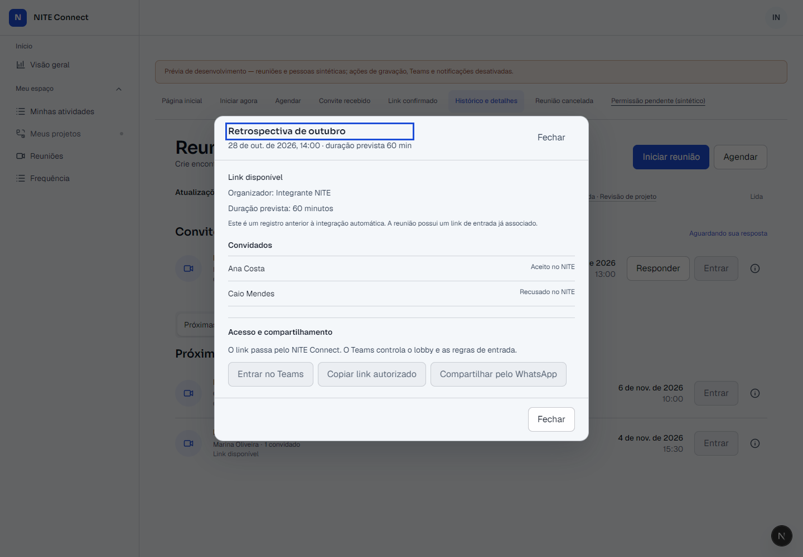
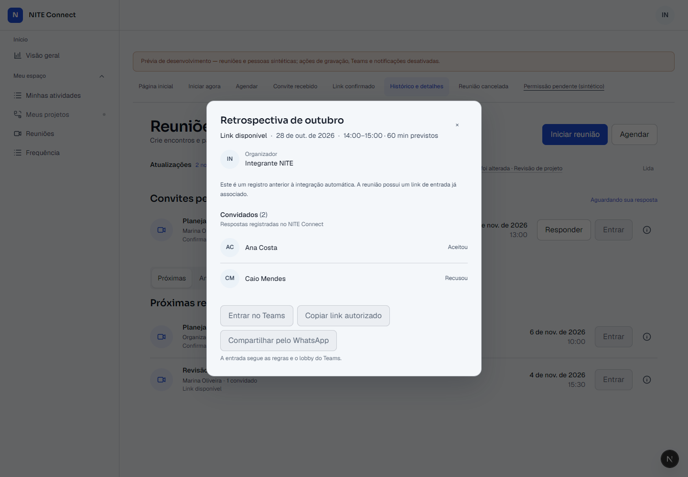
Amie: composição desktop e hierarquia dos dados
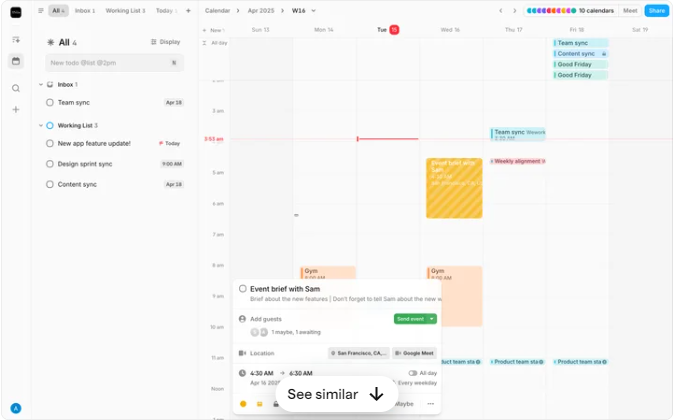
Título primeiro, contexto temporal compacto e informações do encontro agrupadas sob o cabeçalho.
Luma: convidados e respostas
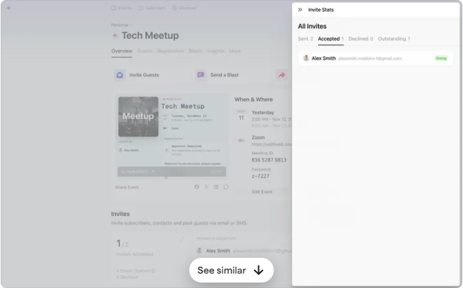
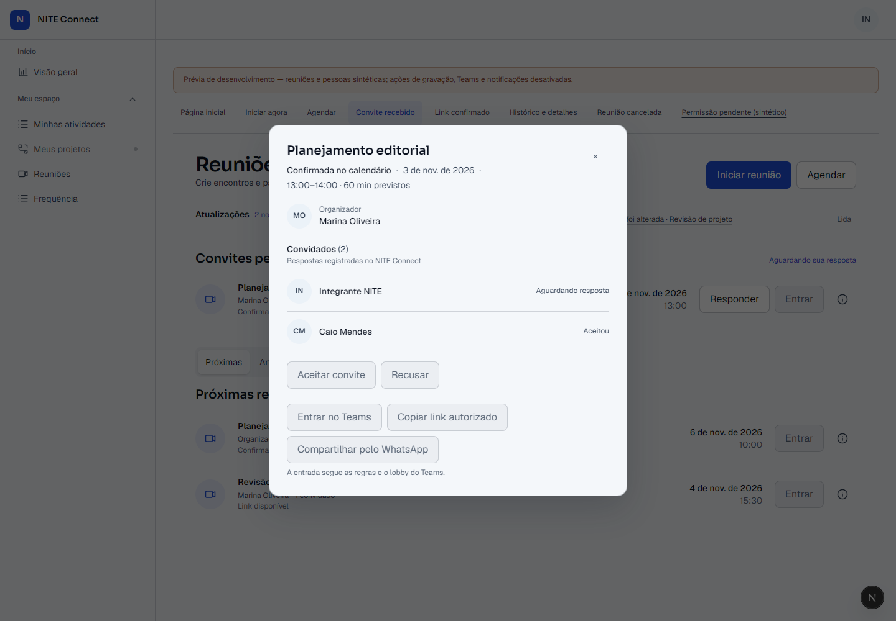
Iniciais derivadas dos nomes, identificação da pessoa e estado da resposta interna na mesma linha.
Zoom: ações contextuais
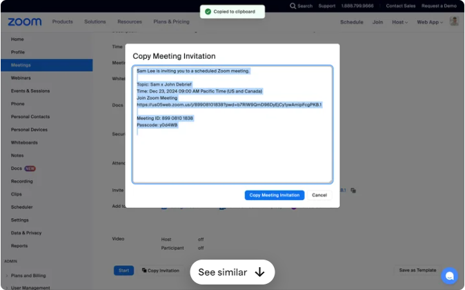
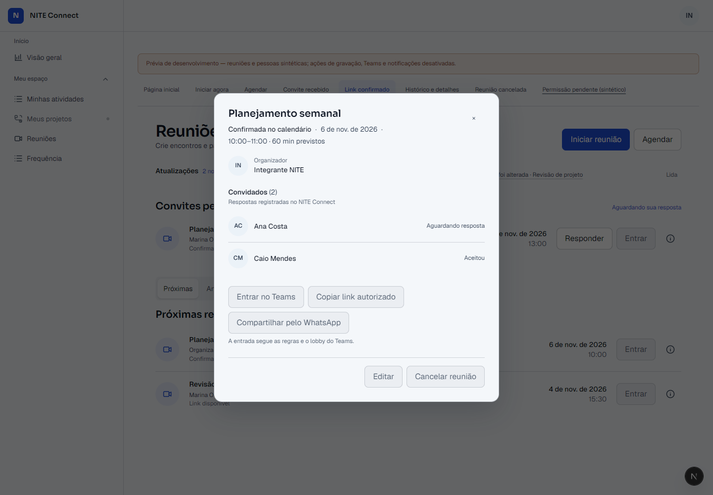
Entrada em primeiro plano, compartilhamento em ações secundárias e gestão restrita ao organizador.
Calendly: data, horário e duração prevista
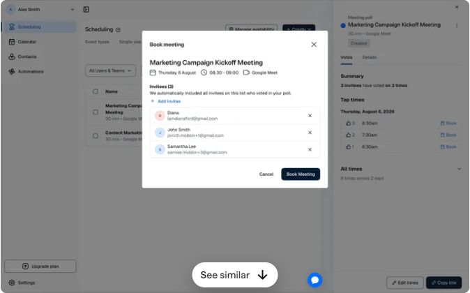
Data, intervalo e duração prevista aparecem juntos; nenhum valor é apresentado como duração efetiva.
Granola: adaptação mobile
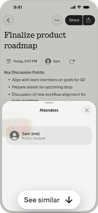
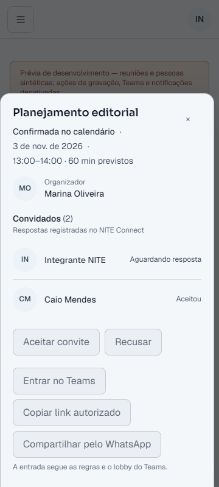
A superfície vira folha inferior; conteúdo rola dentro do modal e ações ficam em alvos confortáveis ao toque.
Largura mínima verificada
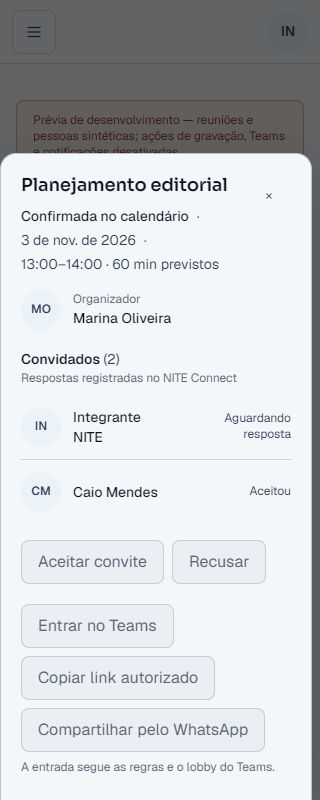
Light e Dark
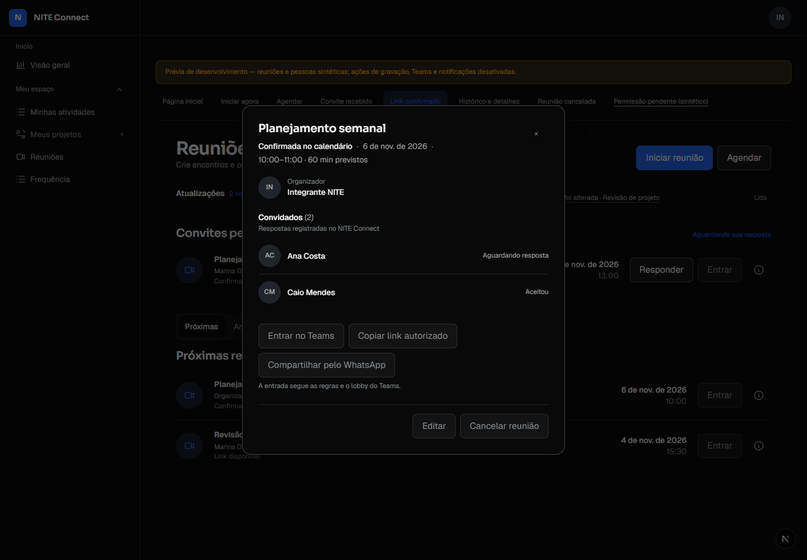
Estados adicionais
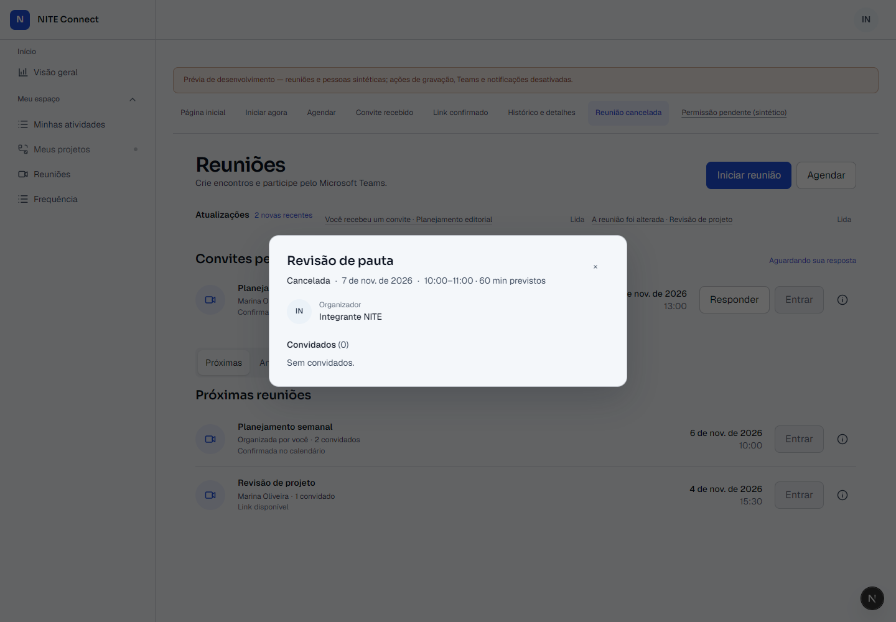